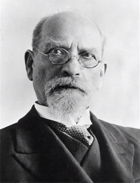

Эдмунд Гуссерль
8 апреля 1859 г. - 27 апреля 1938 г.

Детство и юность
Семейство чешского еврея Адольфа Абрахама Гуссерля не бедствовало. Торговля дамскими шляпками приносила стабильный доход, что позволило отцу философа в 1855 году организовать мануфактуру. Эдмунд был вторым из четырех детей в этой благочестивой семье, говорившей на идиш. Отец не жалел денег на образование сына. Эдмунд окончил реальное училище в Вене, затем поступил в государственную гимназию в городе Ольмюце. В 1876 году он начал учебу в одном из лучших университетов Германии – Лейпцигском. Обширна сфера его интересов, но по-настоящему он полюбил математику, которую продолжил изучать в Берлинском и Венском университетах. В Вене в 1882 году Эдмунд защитил диссертацию на тему «К теории вариационного исчисления», после чего с чистой математикой было покончено.
Учителем Гуссерля по философии станет Франс Брентано, который откроет для него смысл интенциональности и подвигнет к созданию собственного учения. В своей первой публикации «Философия арифметики» Гуссерль еще занимается проблемами математики, но в «Логических исследованиях» он уже подступает к своей главной теме – феноменологии. В 1886 году умирает отец философа, и теперь можно стать настоящим немцем. Гуссерль принимает протестантизм, затем женится и устраивается преподавателем в Галльском университете (Саксония-Анхальт).
В 1911 году он публикует программную статью «Философия как чистая наука», а в 1913-м – первый том «Идей к чистой феноменологии и феноменологической философии». Молох Первой Мировой пожирает его младшего сына, а старшего делает инвалидом. Утешение Гуссерль находит в размышлениях, преподавании и общении с коллегами, среди которых Шелер, Райнах, Пфендер. В 1916 году он занял кафедру во Фрайбургском университете, где он преподавал до 1928 года. До сих пор остается загадкой, какую роль в судьбе Гуссерля сыграл самый способный его ученик Мартин Хайдеггер, ставший убежденным нацистом. Хайдеггер сменяет учителя на фрайбургской кафедре, а в 1933 году становится ректором этого университета.
При Гитлере Гуссерля снимают с должностей и запрещают участвовать в философских конгрессах. Травля сопровождает философа до конца его дней, книги его сжигаются, а детей вынуждают бежать в США. Но почему Гуссерль остался? Почему обрек себя на одиночество среди зигующих антисемитов? С другой стороны, Гуссерля не упрятали в концлагерь и позволили писать. Его книги сжигались, но библиотека и все рукописи сохранились. Ему дали спокойно умереть во Фрайбурге, а вдове и ученикам было позволено выехать. Тайну такой снисходительности еще предстоит раскрыть. Возможно, здесь свою роль сыграл и Мартин Хайдеггер.
Философия Гуссерля
Особенность философии Э. Гуссерля
Особенность философии Э. Гуссерля – выработка нового метода, суть которого в лозунге «Назад к вещам!». Вместо предметов, ценностей, целей, вспомогательных средств, мы рассматриваем тот субъективный опыт, в котором они «являются». Эти «явления» суть феномены, которые по своей природе должны быть «сознанием-о» их объектов, независимо от того, реальны ли сами объекты или нет. Таким образом, понять, что такое вещи можно лишь через описание «феноменов», т.е. явлений, «которые предстают сознанию после осуществления «эпохе», т.е. после заключения в скобки наших философских воззрений и убеждений, связанных с нашей естественной установкой, которая навязывает нам веру в существование мира вещей».
Наше универсальное «эпохе» заключает мир в скобки, т.е. исключает мир (который просто здесь есть), из поля субъекта, представляющего на его месте определенным образом переживаемый-воспринимаемый-вспоминаемый-выражаемый в суждении-мыслимый-оцениваемый и пр. мир как таковой, «заключенный в скобки мир»
Всякий феномен имеет свою собственную интенциональную структуру, анализ которой показывает, что она есть постоянно расширяющаяся система индивидуально интенциональных и интенционально связанных компонентов.
По мнению Э. Гуссерля, феноменологический метод помогает постичь сущность вещей, а не факты. Феноменологический анализ вникает в определенное состояние с точки зрения его сущности.
«Предмет феноменологии – царство чистых истин, априорных смыслов – как актуальных, так и возможных, как реализовавшихся в языке, так и мыслимых». Гуссерль определяет феноменологию как «первую философию», т.е. науку о чистых принципах сознания и знания, универсальное учение о методе, выявляющее априорные условия мыслимости предметов и чистые структуры сознания независимо от сферы их приложения. Познание – поток сознания, внутренне организованный и целостный, относительно независимый от конкретных психических актов, от субъекта познания и его деятельности.
Универсальная задача феноменологической психологии
Универсальная задача феноменологической психологии состоит в систематическом изучении типов и форм интенциональных переживаний, а также в редукции их структур к первичным интенциям и таким образом в изучении природы психического, а также постижении душевной жизни.
Феноменология реализуется с помощью метода редукции (эпохе), после чего достигается понимание субъекта познания не как эмпирического, а как трансцендентального субъекта, т.е. выходящего за пределы эмпирического мира.
Гуссерль вводит понятие «идеация», т.е. способность к непосредственному усмотрению объективно-идеальной основы языковых выражений. Допущение возможности исследований этой способности в рамках феноменологии превращает ее в науку о способе постижения мира через анализ «чистого сознания». Так как сознание, субъективность нельзя взять в скобки, оно и выступает основанием всякой реальности. Мир, по мнению Гуссерля, конструируется сознанием.
Чтобы преодолеть кризис европейских наук и недостатки прежней философии, необходимо «привести латентный (скрытый) разум к самопознанию своих возможностей и тем самым прояснить возможность метафизики как истинную возможность – таков единственный путь действительного осуществления метафизики или универсальной философии». Приведение разума к познанию своих возможностей и раскрытие возможностей мудрости осуществляется для Гуссерля с помощью философии. К правильному пониманию рациональности приводит феноменологическая философия, которая строится на анализе и прояснении феноменов сознания и черпает из них подлинное знание, которое призвано сложиться в философию как строгую науку, объединяющую все человечество.
Личная жизнь
В сентябре 1901 г. начинается новый период жизни Гуссерля: он переезжает в Гёттинген. Несмотря на то, что до 1913 г. никаких крупных работ у Гуссерля не выходило, он ведет активную деятельность: много преподает (в 1906 г. Гуссерль становится ординарным профессором Гёттингенского университета), встречается со многими известными философами (1901 г. - с одним из своих последователей Максом Шелером, 1904 г. - с Теодором Липпсом, еще одним своим сторонником, основателем Мюнхенского кружка, 1905 г. - с Вильгельмом Дильтеем, 1909 г. - с неокантианцем Паулем Наторпом, 1913 г. - с Карлом Ясперсом). Впрочем, многие курсы лекций были опубликованы в собрании сочинений Гуссерля - Husserliana - после его смерти (курс лекций "Идея феноменологии" публиковался даже на русском языке). Кроме того, в 1928 г. под редакцией Мартина Хайдеггера были опубликованы лекции Гуссерля под названием "Феноменология внутреннего сознания времени". С 1910 г. Гуссерль является редактором российско-немецкого философского журнала Логос. В 1911 г. там появляется его статья "Философия как строгая наука" ("Philosophie als strenge Wissenschaft"). В статье критикуется натурализм, психологизм и историцизм, в которых Гуссерль видит формы релятивизма, и выдвигается задача превращения философии в строгую науку. В 1912 г. был основан "Ежегодник философии и феноменологических исследований" ("Jahrbuch für Philosophie und phänomenologische Forschung "), главным редактором которого был Гуссерль. Журнал издавался до 1930 г., а в состав его редколлегии входили Оскар Бекер, Мориц Гайгер, Мартин Хайдеггер, Александр Пфендер, Адольф Райнах и Макс Шелер. В 1913 г. на страницах "Ежегодника" печатается первая книга работы Гуссерля "Идеи чистой феноменологии и феноменологической философии" - "Общее введение в чистую феноменологию" ("Ideen zu einer reinen Phänomenlogie und phänomenlogischen Philosophie. Erstes Buch: Allgemeine Einführung in die reine Phänomenologie", так называемые "Идеи I") . Книга была связана с коренным поворотом в учении Гуссерля - основными ее идеями было учение о чистом сознании и познании сущностей (эйдосов). В начале 1916 г. Гуссерль был назначен на должность профессора философии во Фрайбургский университет, на место Генриха Риккерта, переехавшего после смерти Вильгельма Виндельбанда в Гейдельберг. Начало фрайбургского периода было чрезвычайно тяжелым временем в личной жизни Гуссерля: 8 марта 1916 г. под Верденом погибает его младший сын Вольфганг, в июле 1917 г. у Гуссерля умирает мать, почти в то же время был ранен его сын Герхарт. 20-е гг. были временем наибольшей популярности феноменологии Гуссерля. В 1921 - 1922 гг. переиздаются, в значительно переработанном виде, "Логические исследования", выходит второе издание "Идей I". В 1922 г. Гуссерль читает курс лекций в Лондоне. В 1923 - 1924 гг. выходит ряд его статей в японских журналах: "Обновление: Его проблемы и его методы", "Метод познания сущностей", "Обновление как моральная проблема личности", "Идея философской культуры: Ее первые ростки в греческой философии" ("Erneuerung, Ihr Problem and ihre Methode", "Die Methode der Wesensforschung", "Erneuerung als individualethisches Problem", "Die Idee einer philosophischen Kultur: Ihr erstes Aufkeimen in der grieschischen Philosophie"). Это бы успешный период и в личной жизни Гуссерля: 1922 г. выходит замуж его дочь, в 1923 г. женится его сын Герхарт. В 1926 г. в день рождения Гуссерля (в это время он отдыхает в Тодтнауберге) Мартин Хайдеггер представляет ему рукопись своей книги "Бытие и время" с посвящением "Эдмунду Гуссерлю в почитании и дружбе". В 1927 г. при участии Хайдеггера Гуссерль начинает работать над статьей о феноменологии для Британской энциклопедии. В 1928 г. она была завершена. 1928 г. в жизни Гуссерля был насыщен событиями. Он выходит на пенсию, его кафедру в Фрайбургском университете занимает Хайдеггер, хотя он свое преподавание в университете он не прекращает. В апреле Гуссерль выступает в Амстердаме с докладами, посвященными феноменологической психологии. В том же году под редакцией Хайдеггера в "Ежегоднике" публикуются его "Лекции по феноменологии внутреннего сознания времени" ("Vorlesungen zur Phänomenologie des inneren Zeitbewußtseins"). Гуссерль становится также почетным членом американской Академии наук и искусств. В феврале 1929 г. он выступает в Париже с докладами, которые позже станут основой "Картезианских размышлений". Отмечается юбилей Гуссерля, чему был посвящен специальный выпуск "Ежегодника". Выходит его новая крупная работа - "Формальная и трансцендентальная логика" ("Formale und transzendentale Logik"). Выходит в свет и его статья в Британской энциклопедии. В 1930 г. Гуссерль публикует послесловие к "Идеям чистой феноменологии и феноменологической философии". В 1931 г. во Франции выходят "Картезианские размышления. Введение в феноменологию" ("Méditations cártesiennes. Introduction à la phénoménologie", "Cartesianische Meditationen"). В Германии при жизни Гуссерля эта книга так и не вышла. Помимо нового выражения идей феноменологической редукции и чистого Я в этой работе впервые формулируется идея интерсубъективности. В 1932 г. Гуссерль был избран членом-корреспондентом Академии моральных и политических наук Института Франции. С приходом национал-социалистов к власти Гуссерль начинает испытывать препятствия в своей деятельности. 6 апреля 1933 г. указом министра культуры Бадена он был отстранен от преподавания в университете. Вскоре ему вообще было запрещено преподавание в университетах (правда, в июле это запрещение отменяется). Однако, несмотря на все эти препятствия, Гуссерль в том же году отказывается от предложения университета Южной Калифорнии (Лос-Анджелес, США). В 1934 г. Гуссерль начинает работу над книгой "Кризис европейских наук и трансцендентальная феноменология" и принимает приглашение участвовать в 8 Международном философском конгрессе в Праге. В мае 1935 г. он читает в Праге лекции "Кризис европейского человечества и философия" ("Die Philosophie in der Krisis der europäischen Menschheit"). В ноябре Гуссерль выступает в Праге с докладами "Кризис европейских наук и психология" ("Die Krisis der europäischen Wissenschaften und die Psychologie"). В том же году Гуссерля избирают членом-корреспондентом Британской академии. В начале 1936 г. Гуссерлю окончательно запрещается преподавание в Германии. В январе в Белграде выходит первая часть его последней работы "Кризис европейских наук и трансцендентальная феноменология" ("Die Krisis der europäischen Wissenschaften und die transzendentale Phänomenologie. Eine Einleitung in die phänomenologische Philosophie"). Здесь Гуссерль вводит понятие жизненного мира. Однако полное издание выйдет лишь после смерти. В 1937 г. Гуссерлю запрещают принять участие в 9 Международном философском конгрессе в Париже.
Смерть
Эдмунд Гуссерль, покинутый учениками, непросто переносил нездоровье, которое появилось у него в последние годы жизни. Поздний период завершила работа Гуссерля "Кризис европейских наук", созданная в 1936 году и опубликованная в 1954 г. В ней философ предложил понятие жизненного мира, ставшее очень известным.
Гуссерль скончался 26 апреля 1938 года во Фрайбурге-им-Брайсгау. После его смерти осталось примерно 11 тысяч страниц заметок и неизданных трудов. К счастью, их удалось сохранить. Они были перевезены в Бельгию (Левен), где и сегодня продолжается работа по их изданию, начатая еще в 1950 году (серия "Гуссерлиана").
Основные труды
- Идеи к чистой феноменологии и феноменологической философии.
- Картезианские медитации.
- Картезианские размышления.
- Кризис европейских наук и трансцендентальная феноменология.
- Логические исследования.
- Идеи к чистой феноменологии и феноменологической философии.
- Картезианские медитации.
- Картезианские размышления.
- Кризис европейских наук и трансцендентальная феноменология.
- Логические исследования.